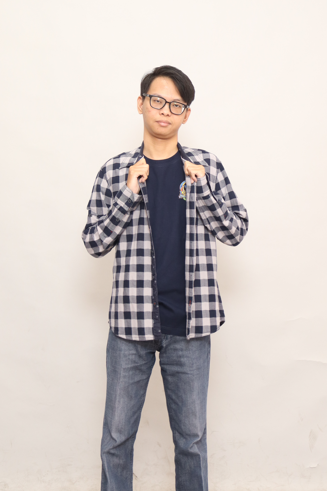

I am a fresh graduate in Informatics Engineering from Satya Wacana
Christian University, with academic exposure to database development,
UI/UX design, and data security. I have built a company profile website
and several church web applications, growing my front-end and back-end
skills along with teamwork and leadership.
I enjoy solving problems creatively and I want to bring what I learned
in class into real-world work as a Web Developer, Software Engineer,
or Game Developer.

Education
education
Universitas Kristen Satya Wacana, Salatiga
program
Informatics Engineering
period
Aug 2022 to Sep 2026
gpa
3.76 / 4.00
courses
Database Design
Database Programming
Web Programming
Database Systems
Software Engineering
Data Security
UI/UX Design
Platform-Oriented Programming
school_history
BPK Penabur Cirebon
sma
Senior high school
smp
Junior high school
sd
Elementary school
tk
Kindergarten
Projects
Each project table points back to me through developer_id.
Newest first.
calvary_db_management
Web-based Database Management, Gereja Calvary Cirebon
developer_id FK
1
role
Full-stack Developer
period
Oct 2026
stack
PHP
Laravel
MySQL
Git
Developed a web-based database management system with user and 4 admin roles: super-admin, admin, staff, and admin-view-only.
Managed tasks across front-end, back-end, database design, documentation, and interviews.
Built the back-end with PHP Laravel and designed the MySQL database architecture.
Coordinated with 2 internal members from Gereja Calvary Cirebon and achieved great satisfaction.
Used Git for smooth synchronization and hosting in web development.
calvary_web_app
Web Application, Gereja Calvary Cirebon
developer_id FK
1
role
Project Leader, Back-end & Database Developer
period
Jan 2026 to Sep 2026
team
3 members
stack
PHP
Laravel
MySQL
QR Code
Git
Developed a web application with user and 3 admin roles: super-admin, staff, and admin-view-only.
Led a 3-member team across front-end, back-end, database design, hosting, documentation, and interviews.
Built a working QR code generator and scanner for church members and staff.
Built 7 database management modules for the super-admin.
Built the back-end with PHP Laravel and designed the MySQL database architecture.
Worked with 2 internal members from Gereja Calvary Cirebon and earned an "A" academic grade and a "Great" satisfaction rating.
Used Git for collaboration and synchronization within the team.
kalitaman_website
Company Profile Website, Kolam Renang Kalitaman
developer_id FK
1
role
Project Leader, Back-end & Database Developer
period
Apr 2023 to Jul 2023
team
3 members
stack
PHP
Laravel
SQL
Developed a company profile website with 7 core features, including CRUD modules, backed by 8 SQL database tables.
Led a 3-member team across front-end, back-end, database design, documentation, and stakeholder interviews.
Managed and delivered 16 project milestones over a 4-month cycle, on time.
Built the back-end with PHP Laravel and designed the SQL database architecture.
Coordinated with 4 stakeholders from the Salatiga Tourism Office and earned an "A" academic grade and a "Good" satisfaction rating.
Skills
skills
hard_skills
SQL Database
PHP
JavaScript
Java
Laravel
Bootstrap
Git
Excel
Word
Canva
AI
soft_skills
Problem Solving
Teamwork
Leadership
Creative
Flexibility
Critical Thinking
Multitasking
Cooperation
Trainings & certifications
Select a row to see what each course covered.
certifications
Database DesignOracle AcademyDec 2024
Designed a structured, efficient database schema.
Created Entity Relationship Diagrams (ERD) to model system data requirements.
Translated ERD designs into relational table structures.
Applied normalization (1NF, 2NF, 3NF) to reduce redundancy and keep data consistent.
Implemented and managed a relational database for application functionality.
Achieved an "A" grade for the project/coursework.
Database ProgrammingOracle AcademyDec 2024
Applied database design principles within a functional application.
Wrote CRUD operations to interact with database tables.
Used SQL queries within PHP to manage and manipulate data.
Achieved an "A" grade for the project/coursework.
Latihan Dasar Kepemimpinan MahasiswaStudent leadership trainingJun 2023
Took part in leadership and teamwork training in a 15-member group.
Joined seminars, mentoring sessions, and team-based games to strengthen collaboration and leadership skills.
Cybersecurity: Penetration Test for Web SecurityWorkshop2024
ASEAN Data Science Explorers 2023: SAP Analytics CloudWebinar2023
Komunikasi Interaktif di Google Workspace for Education PLUSWebinar2023
Contact
I am looking for roles in web development, software engineering, or game
development. Email is the quickest way to reach me.